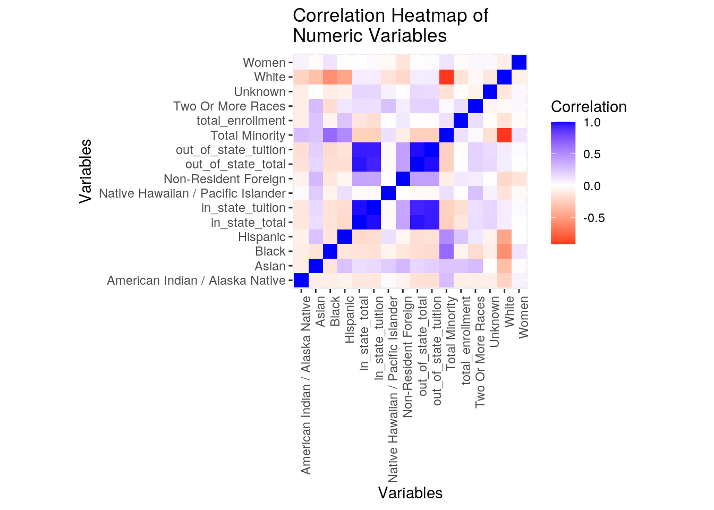
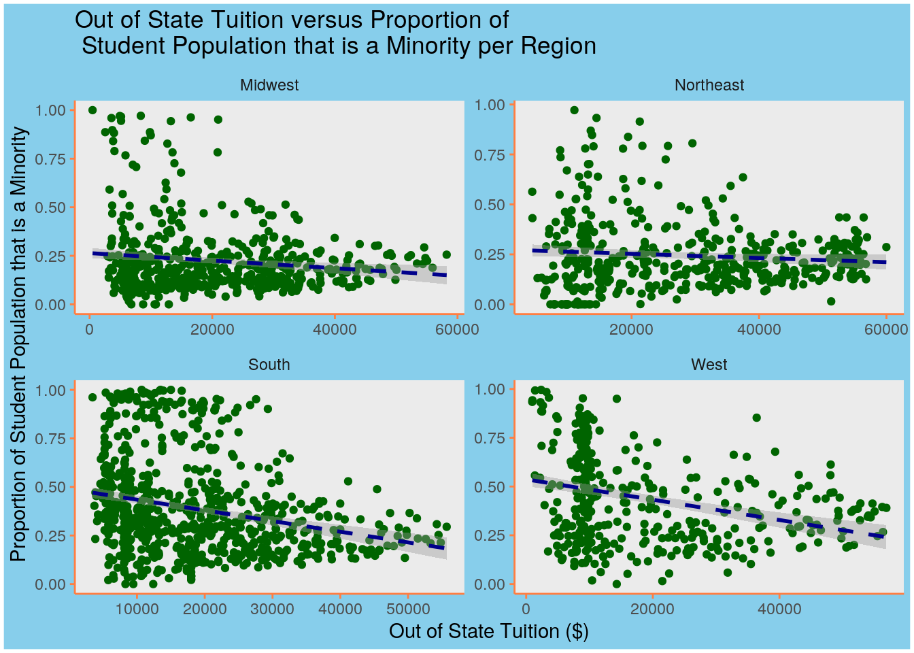
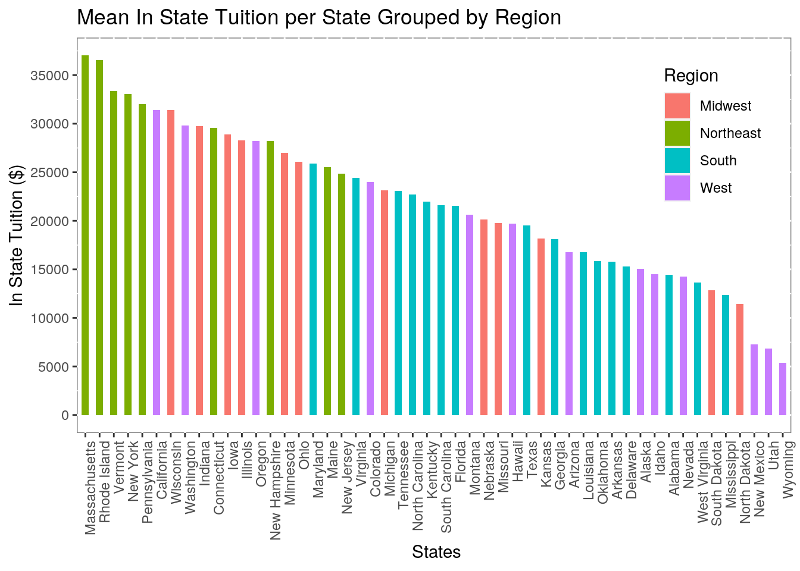
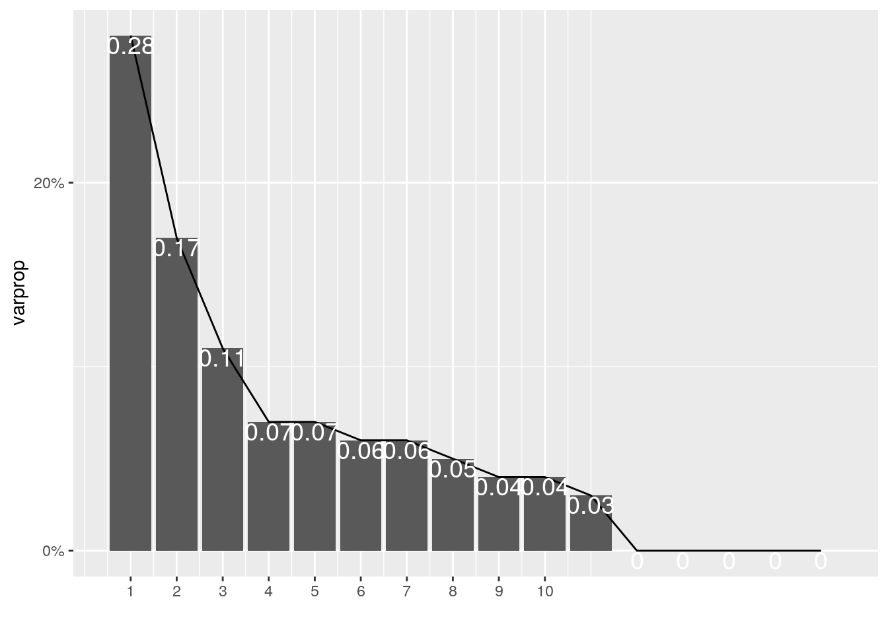
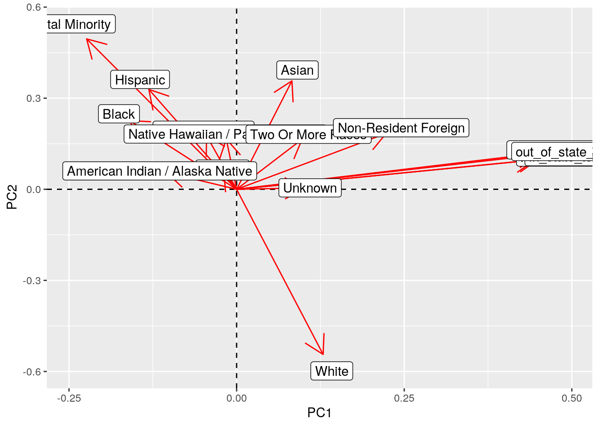
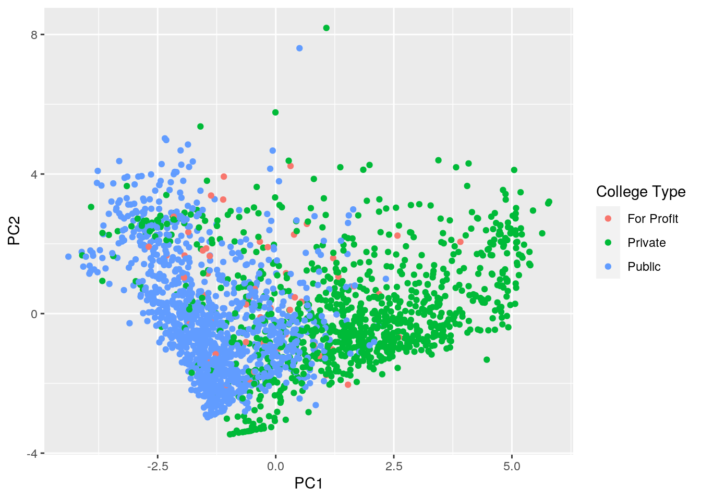
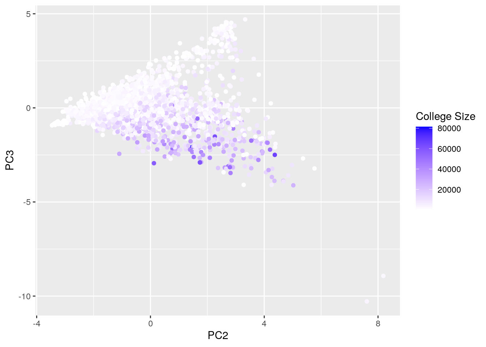

Dataset 1 is and dataset 2 both come from the US Department of Education. Dataset 1 contains data that pertains to US college diversity such as the proportion of each race and gender relative to the entire student population. On the other hand, Dataset 2 contains data that pertains to these college’s tuition and overall cost. Both were easily obtained from the tidytuesday GitHub. Dataset 3 came from the US Census Bureau and it contains classifications regarding what region a state belongs too. It is mainly going to be used to group the different colleges into their respective regions. This dataset was also acquired from the agency’s GitHub repository.
These data sets are interesting to me because I have a brother who will be applying to colleges soon, and looking at these metrics could possibly help narrow down his college list. Additionally, with student debt increasing this could help others find cheaper upper education. I expect that colleges in the coasts will be more expensive that colleges that are in land. I believe this could be due to premium location. It is known that cost of living in states like California and New York are sky high and this could be likewise for colleges. Additionally, I believe that colleges with less diversity will be more expensive as minority groups that have historically been oppressed will find it hard to pay for colleges that have a high sticker price.
Need to download the Library that will be used for the majority of this project.
library(tidyverse)Loading all the datasets.
diversity <- read.csv("diversity.csv") %>% select(-1) %>% mutate_if(is.factor,
as.character)
tuition <- read.csv("tuition.csv") %>% select(-1) %>% mutate_if(is.factor,
as.character)
regions <- read.csv("us census bureau regions and divisions.csv") %>%
mutate_if(is.factor, as.character)Removed columns that were of no meaning to us. And made sure that the variables where in a usable data type by converting some columns to a character type.
Here is an initial view of the data after getting them and before anything is done to them.
diversity %>% glimpse()## Rows: 50,655
## Columns: 5
## $ name <chr> "University of Phoenix-Arizona", "University of Phoe…
## $ total_enrollment <int> 195059, 195059, 195059, 195059, 195059, 195059, 1950…
## $ state <chr> "Arizona", "Arizona", "Arizona", "Arizona", "Arizona…
## $ category <chr> "Women", "American Indian / Alaska Native", "Asian",…
## $ enrollment <int> 134722, 876, 1959, 31455, 13984, 1019, 58209, 19039,…tuition %>% glimpse()## Rows: 2,973
## Columns: 10
## $ name <chr> "Aaniiih Nakoda College", "Abilene Christian Uni…
## $ state <chr> "Montana", "Texas", "Georgia", "Minnesota", "Cal…
## $ state_code <chr> "MT", "TX", "GA", "MN", "CA", "CO", "NY", "NY", …
## $ type <chr> "Public", "Private", "Public", "For Profit", "Fo…
## $ degree_length <chr> "2 Year", "4 Year", "2 Year", "2 Year", "4 Year"…
## $ room_and_board <int> NA, 10350, 8474, NA, 16648, 8782, 16030, 11660, …
## $ in_state_tuition <int> 2380, 34850, 4128, 17661, 27810, 9440, 38660, 53…
## $ in_state_total <int> 2380, 45200, 12602, 17661, 44458, 18222, 54690, …
## $ out_of_state_tuition <int> 2380, 34850, 12550, 17661, 27810, 20456, 38660, …
## $ out_of_state_total <int> 2380, 45200, 21024, 17661, 44458, 29238, 54690, …regions %>% glimpse()## Rows: 51
## Columns: 4
## $ State <chr> "Alaska", "Alabama", "Arkansas", "Arizona", "California", …
## $ State.Code <chr> "AK", "AL", "AR", "AZ", "CA", "CO", "CT", "DC", "DE", "FL"…
## $ Region <chr> "West", "South", "South", "West", "West", "West", "Northea…
## $ Division <chr> "Pacific", "East South Central", "West South Central", "Mo…diversity, regions and tuition dataset are all tidy and clean.Here is a demonstration of using pivot_wider() and pivot_longer() using the diversity dataset.
dirty <- diversity %>% pivot_wider(names_from = category, values_from = enrollment) %>%
glimpse(100)## Rows: 4,604
## Columns: 14
## $ name <chr> "University of Phoenix-Arizona", "Ivy Tech Community…
## $ total_enrollment <int> 195059, 91179, 81459, 69395, 66046, 62304, 61642, 60…
## $ state <chr> "Arizona", "Indiana", "Virginia", "Texas", "Florida"…
## $ Women <list> [134722, 53476, 48329, 41268, 38323, 46647, 29277, …
## $ `American Indian / Alaska Native` <list> [876, 357, 447, 168, 47, 586, 173, 120, 76, 116, 36…
## $ Asian <list> [1959, 1369, 856, 4198, 655, 2446, 3545, 3343, 3339…
## $ Black <list> [31455, 12370, 14751, 12094, 10722, 13856, 1879, 64…
## $ Hispanic <list> [13984, 5533, 1186, 23751, 44870, 8933, 11256, 1310…
## $ `Native Hawaiian / Pacific Islander` <list> [1019, 0, 151, 0, 41, 295, 59, 129, 35, 130, 288, 5…
## $ White <list> [58209, 61498, 39062, 23615, 4170, 28715, 37458, 33…
## $ `Two Or More Races` <list> [19039, 1804, 1772, 1997, 226, 1558, 1644, 1841, 15…
## $ Unknown <list> [65163, 8224, 22198, 2273, 1927, 5915, 383, 1018, 1…
## $ `Non-Resident Foreign` <list> [3355, 24, 1036, 1299, 3388, 0, 5245, 1515, 6176, 5…
## $ `Total Minority` <list> [68332, 21433, 19163, 42208, 56561, 27674, 18556, 2…The diversity dataset was originally in a long format. Using pivot wider, we took the names for the new columns from the category column and the corresponding values from the enrollment column. Now we created a column for categories such as race and gender.
Now that the data is in wide form, we will use pivtot_longer() to turn the dataset back into long form.
cleaned <- pivot_longer(data = dirty, cols = -c(1:4), names_to = "category",
values_to = "enrollment") %>% glimpse(100)## Rows: 46,040
## Columns: 6
## $ name <chr> "University of Phoenix-Arizona", "University of Phoenix-Arizona", "Unive…
## $ total_enrollment <int> 195059, 195059, 195059, 195059, 195059, 195059, 195059, 195059, 195059, …
## $ state <chr> "Arizona", "Arizona", "Arizona", "Arizona", "Arizona", "Arizona", "Arizo…
## $ Women <list> [134722, 134722, 134722, 134722, 134722, 134722, 134722, 134722, 134722…
## $ category <chr> "American Indian / Alaska Native", "Asian", "Black", "Hispanic", "Native…
## $ enrollment <list> [876, 1959, 31455, 13984, 1019, 58209, 19039, 65163, 3355, 68332, 357, …We selected all the data columns that we want to collect together and put them under the column “category” and their corresponding values in the column “enrollment”. Now our data is in a long format.
Here is where joining of all three datasets takes places.
combined <- left_join(tuition, diversity, by = c("name", "state")) %>%
left_join(regions, by = c(state = "State")) %>% select(-State.Code)
combined %>% pivot_wider(names_from = category, values_from = enrollment) %>%
head()## # A tibble: 6 x 25
## name state state_code type degree_length room_and_board in_state_tuition
## <chr> <chr> <chr> <chr> <chr> <int> <int>
## 1 Aani… Mont… MT Publ… 2 Year NA 2380
## 2 Abil… Texas TX Priv… 4 Year 10350 34850
## 3 Abra… Geor… GA Publ… 2 Year 8474 4128
## 4 Acad… Minn… MN For … 2 Year NA 17661
## 5 Acad… Cali… CA For … 4 Year 16648 27810
## 6 Adam… Colo… CO Publ… 4 Year 8782 9440
## # … with 18 more variables: in_state_total <int>, out_of_state_tuition <int>,
## # out_of_state_total <int>, total_enrollment <int>, Region <chr>,
## # Division <chr>, Women <int>, `American Indian / Alaska Native` <int>,
## # Asian <int>, Black <int>, Hispanic <int>, `Native Hawaiian / Pacific
## # Islander` <int>, White <int>, `Two Or More Races` <int>, Unknown <int>,
## # `Non-Resident Foreign` <int>, `Total Minority` <int>, `NA` <int>combined %>% glimpse(100)## Rows: 24,513
## Columns: 15
## $ name <chr> "Aaniiih Nakoda College", "Aaniiih Nakoda College", "Aaniiih Nakoda …
## $ state <chr> "Montana", "Montana", "Montana", "Montana", "Montana", "Montana", "M…
## $ state_code <chr> "MT", "MT", "MT", "MT", "MT", "MT", "MT", "MT", "MT", "MT", "MT", "T…
## $ type <chr> "Public", "Public", "Public", "Public", "Public", "Public", "Public"…
## $ degree_length <chr> "2 Year", "2 Year", "2 Year", "2 Year", "2 Year", "2 Year", "2 Year"…
## $ room_and_board <int> NA, NA, NA, NA, NA, NA, NA, NA, NA, NA, NA, 10350, 10350, 10350, 103…
## $ in_state_tuition <int> 2380, 2380, 2380, 2380, 2380, 2380, 2380, 2380, 2380, 2380, 2380, 34…
## $ in_state_total <int> 2380, 2380, 2380, 2380, 2380, 2380, 2380, 2380, 2380, 2380, 2380, 45…
## $ out_of_state_tuition <int> 2380, 2380, 2380, 2380, 2380, 2380, 2380, 2380, 2380, 2380, 2380, 34…
## $ out_of_state_total <int> 2380, 2380, 2380, 2380, 2380, 2380, 2380, 2380, 2380, 2380, 2380, 45…
## $ total_enrollment <int> 291, 291, 291, 291, 291, 291, 291, 291, 291, 291, 291, 4427, 4427, 4…
## $ category <chr> "Women", "American Indian / Alaska Native", "Asian", "Black", "Hispa…
## $ enrollment <int> 178, 256, 0, 0, 2, 0, 33, 0, 0, 0, 258, 2562, 18, 46, 387, 582, 0, 2…
## $ Region <chr> "West", "West", "West", "West", "West", "West", "West", "West", "Wes…
## $ Division <chr> "Mountain", "Mountain", "Mountain", "Mountain", "Mountain", "Mountai…left_join is used with the tuition dataset being the dataset on the left because we want to keep all the rows from tuition and add rows with matches from diverstiy. The reason for this is because tuition dataset has less rows(less colleges) than the diversity dataset. Doing it like this minimizes the number of NAs in the combined dataset. No rows were dropped from the tuition dataset;however, the diversity dataset had 4046 different colleges while tuition dataset had 2973 unique colleges. This resulted in 1073 unique colleges being dropped from the diversity dataset. It appears that more rows were dropped from the diversity dataset, but the dataset was just in a long format! After pivoting wider the merged dataset their appears to be the same number of rows in tuition as the merged dataset. The reason for joining by “name” and “state” is because some colleges have the same name but are in different states. Doing it this way ensures that each school has a unique identifier.
The the regions data set was left joined to the combined set, this resulted in no cases being dropped as all 50 states are in the combined dataset. I think this joining was the best way to merge the datasets as we wanted to minimize the number of dropped rows and keep as many unique colleges in the dataframe.
Removed the variable room_and_board because a lot of colleges don’t have this variable! Used na.omit() to remove any rows with NAs
combined2 <- combined %>% select(-room_and_board) %>% na.omit()
combined2 %>% glimpse(100)## Rows: 23,694
## Columns: 14
## $ name <chr> "Aaniiih Nakoda College", "Aaniiih Nakoda College", "Aaniiih Nakoda …
## $ state <chr> "Montana", "Montana", "Montana", "Montana", "Montana", "Montana", "M…
## $ state_code <chr> "MT", "MT", "MT", "MT", "MT", "MT", "MT", "MT", "MT", "MT", "MT", "T…
## $ type <chr> "Public", "Public", "Public", "Public", "Public", "Public", "Public"…
## $ degree_length <chr> "2 Year", "2 Year", "2 Year", "2 Year", "2 Year", "2 Year", "2 Year"…
## $ in_state_tuition <int> 2380, 2380, 2380, 2380, 2380, 2380, 2380, 2380, 2380, 2380, 2380, 34…
## $ in_state_total <int> 2380, 2380, 2380, 2380, 2380, 2380, 2380, 2380, 2380, 2380, 2380, 45…
## $ out_of_state_tuition <int> 2380, 2380, 2380, 2380, 2380, 2380, 2380, 2380, 2380, 2380, 2380, 34…
## $ out_of_state_total <int> 2380, 2380, 2380, 2380, 2380, 2380, 2380, 2380, 2380, 2380, 2380, 45…
## $ total_enrollment <int> 291, 291, 291, 291, 291, 291, 291, 291, 291, 291, 291, 4427, 4427, 4…
## $ category <chr> "Women", "American Indian / Alaska Native", "Asian", "Black", "Hispa…
## $ enrollment <int> 178, 256, 0, 0, 2, 0, 33, 0, 0, 0, 258, 2562, 18, 46, 387, 582, 0, 2…
## $ Region <chr> "West", "West", "West", "West", "West", "West", "West", "West", "Wes…
## $ Division <chr> "Mountain", "Mountain", "Mountain", "Mountain", "Mountain", "Mountai…Select function was used to remove an extra column that is was represented in the dataframe already. Any NAs were omitted to make analysis easier.
The diversity dataframe gave us values that were absolute, we need the values relative to the university overall numbers. For example, if a university has a student population of 500 and there are 400 women, is different from a university of student population 10,000 and has 400 women. Which is why it is important to find the propotion of each category vs total enrollment.
combined_final_wide <- combined2 %>% pivot_wider(names_from = category,
values_from = enrollment) %>% mutate(Women = Women/total_enrollment,
`American Indian / Alaska Native` = `American Indian / Alaska Native`/total_enrollment,
Asian = Asian/total_enrollment, Black = Black/total_enrollment,
Hispanic = Hispanic/total_enrollment, `Native Hawaiian / Pacific Islander` = `Native Hawaiian / Pacific Islander`/total_enrollment,
White = White/total_enrollment, `Two Or More Races` = `Two Or More Races`/total_enrollment,
Unknown = Unknown/total_enrollment, `Non-Resident Foreign` = `Non-Resident Foreign`/total_enrollment,
`Total Minority` = `Total Minority`/total_enrollment)After pivotting wider as in the previous section, the mutate() function was used to create new columns that are now more accurate to use. We divided columns such as Women, Black, and White by the total enrollment at that university.
Ran a summary statistic for the entire dataset!
combined_final_wide %>% filter(degree_length == "2 Year") %>%
summarize_if(is.numeric, median) %>% glimpse(100)## Rows: 1
## Columns: 16
## $ in_state_tuition <dbl> 4230
## $ in_state_total <dbl> 4808.5
## $ out_of_state_tuition <dbl> 8950
## $ out_of_state_total <dbl> 10008
## $ total_enrollment <dbl> 4345.5
## $ Women <dbl> 0.5835504
## $ `American Indian / Alaska Native` <dbl> 0.004595825
## $ Asian <dbl> 0.01494745
## $ Black <dbl> 0.07893
## $ Hispanic <dbl> 0.07268423
## $ `Native Hawaiian / Pacific Islander` <dbl> 0.001293634
## $ White <dbl> 0.6087535
## $ `Two Or More Races` <dbl> 0.0212413
## $ Unknown <dbl> 0.02270579
## $ `Non-Resident Foreign` <dbl> 0.00311511
## $ `Total Minority` <dbl> 0.3352371The summarize function was used by itself on the data. After filtering the dataframe for only two year colleges, which consists of technical and community colleges, the median value was calculated for every column.
It appears that median in state tuition is around $4230 dollars, while out of state tuition is nearly double that, at around $8,950. It appears that median composition of women in the student population is almost at 60%. There are appears to be slightly more women going for degrees at their community colleges than men. This could be due to the fact that historically women have been the stay at home moms and now would like to further their education at their local community college. This is happening at my own home!
For every state we filtered for their 4 year colleges and found the average for all their numeric variables. Then we arranged from highest to lowest out of state total cost.
combined_final_wide %>% filter(degree_length == "4 Year") %>%
group_by(state) %>% summarize_if(is.numeric, mean) %>% arrange(desc(out_of_state_total)) %>%
select(-c(in_state_total, `Total Minority`, `Non-Resident Foreign`,
Unknown, `Two Or More Races`, `Native Hawaiian / Pacific Islander`,
`American Indian / Alaska Native`, out_of_state_tuition)) %>%
head(20)## # A tibble: 20 x 9
## state in_state_tuition out_of_state_to… total_enrollment Women Asian Black
## <chr> <dbl> <dbl> <dbl> <dbl> <dbl> <dbl>
## 1 Rhod… 36562 53917. 6154. 0.544 0.0491 0.0422
## 2 Mass… 37016. 52592. 4606. 0.592 0.0565 0.0710
## 3 Verm… 33384 49480. 2587. 0.521 0.0209 0.0342
## 4 Wash… 29785. 46276. 8541 0.564 0.0681 0.0281
## 5 Oreg… 28204. 45551 6438 0.579 0.0521 0.0217
## 6 New … 33069. 44761. 4200. 0.473 0.0423 0.0681
## 7 Penn… 32047. 44715. 4283. 0.590 0.0299 0.104
## 8 Conn… 29577. 44676. 6567. 0.580 0.0349 0.109
## 9 New … 28200. 42791. 6629. 0.592 0.0233 0.0381
## 10 Mary… 25879. 42671. 6251. 0.598 0.0388 0.266
## 11 Indi… 29761. 41926. 4813. 0.520 0.0193 0.118
## 12 Virg… 24446 41530. 8499. 0.573 0.0321 0.211
## 13 Cali… 31402. 41348. 5053. 0.541 0.114 0.0617
## 14 Maine 25546. 41211. 3108. 0.599 0.0223 0.0271
## 15 Colo… 23982. 40899. 5607. 0.532 0.0219 0.0349
## 16 Wisc… 31394. 40655. 2939. 0.641 0.0271 0.0608
## 17 Iowa 28878. 39362. 4168. 0.567 0.0283 0.0441
## 18 New … 24854. 39038. 7077. 0.472 0.0522 0.128
## 19 Illi… 28277. 38636. 6183 0.607 0.0506 0.120
## 20 Hawa… 19691. 37290 4169 0.609 0.209 0.0420
## # … with 2 more variables: Hispanic <dbl>, White <dbl>The mean summary statistics were done for states and their various variables. First we used the filter() function to only have institutions with 4 year degree lengths in the dataframe. We then used group_by to group by states before using the summarize_if() function to apply the mean summary statistic to the numeric columns in the dataset. Finally, using arrange() to arrange the rows in an ascending fashion using the out of state total mean.
After grouping by state it appears that Rhode Island and Massachusetts have the highest out of state total cost! We had hypothesized earlier that colleges in the East coast would be more expensive due to their location. Aside from Pennsylvania, the top 10 states with highest average out of state total are all physically touching a body of water! Could it be that if a state has access to beach water that is what makes it expensive? Or could it be that states with more private colleges are what results in increased tuition?
We did summary statistics for each of the region’s variables.
combined_final_wide %>% filter(degree_length == "4 Year") %>%
group_by(Region) %>% summarize_if(is.numeric, funs(median,
mean, sd, min, max)) %>% as.data.frame() %>% arrange(out_of_state_tuition_median) %>%
head()## Region in_state_tuition_median in_state_total_median
## 1 South 15563 24437
## out_of_state_tuition_median out_of_state_total_median total_enrollment_median
## 1 22832.5 32009.5 2759
## Women_median American Indian / Alaska Native_median Asian_median Black_median
## 1 0.5796636 0.003369663 0.01429967 0.1363774
## Hispanic_median Native Hawaiian / Pacific Islander_median White_median
## 1 0.04177287 0.0008498936 0.6037964
## Two Or More Races_median Unknown_median Non-Resident Foreign_median
## 1 0.02158636 0.02221841 0.02473307
## Total Minority_median in_state_tuition_mean in_state_total_mean
## 1 0.3022176 19845.93 28964.75
## out_of_state_tuition_mean out_of_state_total_mean total_enrollment_mean
## 1 24596.1 33714.92 6746.048
## Women_mean American Indian / Alaska Native_mean Asian_mean Black_mean
## 1 0.5684503 0.007573542 0.02501158 0.25528
## Hispanic_mean Native Hawaiian / Pacific Islander_mean White_mean
## 1 0.0766952 0.001287659 0.5302577
## Two Or More Races_mean Unknown_mean Non-Resident Foreign_mean
## 1 0.02213554 0.04130982 0.04044902
## Total Minority_mean in_state_tuition_sd in_state_total_sd
## 1 0.3879835 12787.8 14727.4
## out_of_state_tuition_sd out_of_state_total_sd total_enrollment_sd Women_sd
## 1 10581.04 12894.69 9874.303 0.1258458
## American Indian / Alaska Native_sd Asian_sd Black_sd Hispanic_sd
## 1 0.0195984 0.03173999 0.2794492 0.1074147
## Native Hawaiian / Pacific Islander_sd White_sd Two Or More Races_sd
## 1 0.00210533 0.257724 0.01917369
## Unknown_sd Non-Resident Foreign_sd Total Minority_sd in_state_tuition_min
## 1 0.05602296 0.05458532 0.2613788 3194
## in_state_total_min out_of_state_tuition_min out_of_state_total_min
## 1 5390 5390 5390
## total_enrollment_min Women_min American Indian / Alaska Native_min Asian_min
## 1 24 0 0 0
## Black_min Hispanic_min Native Hawaiian / Pacific Islander_min White_min
## 1 0 0 0 0
## Two Or More Races_min Unknown_min Non-Resident Foreign_min Total Minority_min
## 1 0 0 0 0
## in_state_tuition_max in_state_total_max out_of_state_tuition_max
## 1 55695 71338 55695
## out_of_state_total_max total_enrollment_max Women_max
## 1 71338 81459 1
## American Indian / Alaska Native_max Asian_max Black_max Hispanic_max
## 1 0.211071 0.1993938 1 0.9298385
## Native Hawaiian / Pacific Islander_max White_max Two Or More Races_max
## 1 0.02 1 0.1759305
## Unknown_max Non-Resident Foreign_max Total Minority_max
## 1 0.3987517 0.6356859 1
## [ reached 'max' / getOption("max.print") -- omitted 3 rows ]Summary statistics were done for regions and their various variables. First we used the filter() function to only have institutions with 4 year degree lengths in the dataframe. We then used group_by to group by region before using the summarize_if() function to apply summary statistics such as sd,mean,median,min,max to all the numeric columns in the dataset. Finally, using arrange() to arrange the rows in an ascending fashion using the out of state tuition median.
Using the out of state median tuition to arrange, it appears that the South region has the lower out of state tuition. Earlier I hypothesized that both the East and the West Coast regions would have higher tuition and it appears that the East and West coast out of state tuitions are higher than the other regions. It also appears that colleges with a higher hispanic student population appear to be in the West. This could be due to states like California’s large Hispanic population! The median for the propotion of women in the student population appears to be around 0.56 and 0.57 for all four regions. I would’ve expected that there be more colleges where men are compose most of the student body;however, this is false.
A correlation heatmap of the numeric variables.
cormat <- combined_final_wide %>% select_if(is.numeric) %>% cor(use = "pair")
tidycor <- cormat %>% as.data.frame %>% rownames_to_column("var1") %>%
pivot_longer(-1, names_to = "var2", values_to = "correlation")
tidycor## # A tibble: 256 x 3
## var1 var2 correlation
## <chr> <chr> <dbl>
## 1 in_state_tuition in_state_tuition 1
## 2 in_state_tuition in_state_total 0.982
## 3 in_state_tuition out_of_state_tuition 0.945
## 4 in_state_tuition out_of_state_total 0.929
## 5 in_state_tuition total_enrollment -0.173
## 6 in_state_tuition Women 0.0194
## 7 in_state_tuition American Indian / Alaska Native -0.128
## 8 in_state_tuition Asian 0.161
## 9 in_state_tuition Black -0.159
## 10 in_state_tuition Hispanic -0.180
## # … with 246 more rowstidycor %>% ggplot(aes(var1, var2, fill = correlation)) + geom_tile() +
scale_fill_gradient2(low = "red", mid = "white", high = "blue",
name = "Correlation") + theme(axis.text.x = element_text(angle = 90,
hjust = 1)) + coord_fixed() + ggtitle("Correlation Heatmap of \nNumeric Variables") +
scale_x_discrete(name = "Variables") + scale_y_discrete(name = "Variables") A correlation heatmap was run using all the numeric variables in the dataset. It appears that there are clumps with very high positive relationship, but that is due to the fact that these four variables are all very closely related. Higher out state tuition and total out of state total would almost perfectly correlate as total out of state would include out of state tuition and like wise with in state fees. There is an inverse relationship between people of the race white and minorities as the two change when one goes up. On the other hand, there appears to be a weak negative relationship between Blacks, Hispanics and out of state total. As we said before this could be due to these groups being at a disadvantage compared to their white peers in terms of paying for their education.
ggplot depicting the relationship between Out of state tuition and proportion of minority within the student population for all colleges.
ggplot_data <- combined_final_wide %>% select(out_of_state_tuition,
Women, total_enrollment, Region, name, `Total Minority`)
ggplot_data %>% ggplot(aes(y = `Total Minority`, x = out_of_state_tuition)) +
geom_point(color = "dark green") + geom_smooth(method = "lm",
formula = y ~ x, linetype = "dashed", color = "dark blue") +
facet_wrap(~Region, scales = "free") + scale_y_continuous(name = " Proportion of Student Population that is a Minority") +
scale_x_continuous(name = "Out of State Tuition ($)") + ggtitle("Out of State Tuition versus Proportion of \n Student Population that is a Minority per Region ") +
theme(panel.grid = element_blank(), axis.line = element_line(color = "#FF7E42"),
axis.ticks = element_line(color = "#FF7E42"), plot.background = element_rect(fill = "sky blue",
color = "white", size = 2), legend.key = element_blank(),
legend.background = element_blank(), strip.background = element_blank()) From this faceted scatter plot with a lines of best fit help us explore the relationship between out of state tuition and percent of the student body that identifies as a minority. For all four regions, there appears to be a weak negative relationship between the two variables. As out of state tuition increases, colleges have a lower percentage of its student body as a minority. However, there appears to be much a much stronger negative relationship in the Western and Southern Region. These correlations are very weak and could be due to other factors. For every region there are numerous colleges that have low tuition but high and low proportions of minorities.Perhaps, tuition price at the lower ends doesn’t affect the minority percentage but only at the higher end.
ggplot depicting the relationship between in state tuition and proportion of minority within the student population.
ggplot(combined_final_wide %>% filter(degree_length == "4 Year"),
aes(x = reorder(state, -in_state_tuition))) + geom_bar(aes(y = in_state_tuition,
fill = Region), stat = "summary", fun = mean, width = 0.5,
position = position_dodge(0.8)) + theme(axis.text.x = element_text(angle = 90,
hjust = 1), panel.background = element_rect(fill = "white",
colour = "grey50"), legend.justification = c("right", "top"),
legend.position = c(0.97, 0.95)) + scale_x_discrete(name = " States") +
ggtitle("Mean In State Tuition per State Grouped by Region ") +
scale_y_continuous(breaks = seq(from = 0, to = 40000, by = 5000),
name = "In State Tuition ($)") This bar chart depicts the average in state tuition per state for 4 year institutions, with the regions color coded. As we saw earlier in the summary statistics, the top 5 states with the most expensive in state tuition come from the Northeast region. This is due to the fact that many elite universities, such as MIT, Harvard, Yale, Princeton, Boston college are private and are located there. The top 4 states with cheapest tuition come from states that are landlocked such as Wyoming, Utah, New Mexico and North Dakota. Perhaps further analysis should be done to see whether the number of private schools in a state or the average ranking of all the colleges in a state contribute to the increased in state tuition.
poke_nums <- combined_final_wide %>% select_if(is.numeric) %>%
scale
rownames(poke_nums) <- combined_final_wide$nameSelected all the numeric columns that will be used for the PCA and then normalized the data by using the scale() function! Added the college names as row names so we could later identify the rows.
poke_pca <- princomp(poke_nums)
names(poke_pca)## [1] "sdev" "loadings" "center" "scale" "n.obs" "scores" "call"Performed PCA by running the prepared variables through princomp().
eigval <- poke_pca$sdev^2
varprop = round(eigval/sum(eigval), 2)
ggplot() + geom_bar(aes(y = varprop, x = 1:16), stat = "identity") +
xlab("") + geom_path(aes(y = varprop, x = 1:16)) + geom_text(aes(x = 1:16,
y = varprop, label = round(varprop, 2)), vjust = 1, col = "white",
size = 5) + scale_y_continuous(breaks = seq(0, 0.6, 0.2),
labels = scales::percent) + scale_x_continuous(breaks = 1:10) After running a scree plot, that shows the variance explained by each PC, it appears that it takes 7 PCs for the cumulative proportion of the variances to be greater than 80%. It appears that not one PC can strongly explain the data’s variance.
summary(poke_pca, loadings = T)## Importance of components:
## Comp.1 Comp.2 Comp.3 Comp.4 Comp.5
## Standard deviation 2.1156815 1.6484115 1.3211493 1.07493622 1.04728815
## Proportion of Variance 0.2798867 0.1699077 0.1091404 0.07225154 0.06858262
## Cumulative Proportion 0.2798867 0.4497944 0.5589348 0.63118630 0.69976891
## Comp.6 Comp.7 Comp.8 Comp.9 Comp.10
## Standard deviation 1.01929245 0.99289403 0.90249620 0.84705060 0.78507098
## Proportion of Variance 0.06496498 0.06164353 0.05092986 0.04486425 0.03853892
## Cumulative Proportion 0.76473389 0.82637742 0.87730728 0.92217152 0.96071044
## Comp.11 Comp.12 Comp.13 Comp.14 Comp.15
## Standard deviation 0.72922335 0.253029167 0.180417815 5.569093e-08 0
## Proportion of Variance 0.03325086 0.004003344 0.002035357 1.939325e-16 0
## Cumulative Proportion 0.99396130 0.997964643 1.000000000 1.000000e+00 1
## Comp.16
## Standard deviation 0
## Proportion of Variance 0
## Cumulative Proportion 1
##
## Loadings:
## Comp.1 Comp.2 Comp.3 Comp.4 Comp.5 Comp.6
## in_state_tuition 0.444 0.144
## in_state_total 0.449 0.143
## out_of_state_tuition 0.449 0.118
## out_of_state_total 0.448 0.113
## total_enrollment 0.177 -0.342 -0.380 -0.170
## Women 0.188 0.379 -0.444 0.325
## Comp.7 Comp.8 Comp.9 Comp.10 Comp.11 Comp.12
## in_state_tuition 0.142 0.637
## in_state_total 0.109 0.329
## out_of_state_tuition 0.119 -0.441
## out_of_state_total 0.158 -0.516
## total_enrollment 0.328 -0.380 0.529 0.338 0.155
## Women 0.494 -0.248 -0.406 0.156 -0.139
## Comp.13 Comp.14 Comp.15 Comp.16
## in_state_tuition 0.362 0.455
## in_state_total -0.544 -0.582
## out_of_state_tuition 0.622 -0.404
## out_of_state_total -0.429 0.536
## total_enrollment
## Women
## [ reached getOption("max.print") -- omitted 10 rows ]Could see the different variables in the PCA by running summary() function on the PCA object. Here we can view Loadings, which contain the principal components and the variance each PC explains.
Looking at the Loadings, it appears that PC1 explains the relationship relationship between tuition rates and costs, both in and out of state with the proportion of minority at the institution. It is consistent with the previous findings that the higher the cost of a college the lower the percentage of minorities will make up the student population. PC2 appears to explain how increasing proportion of a white student population will result in lower proportions of minorities, which is expected!PC3 appears to show how large colleges, indicated by large total enrollment, have lower proportion of Black students. It appears that these relationships are not as strong due to the low variance explained by each PC.
Plot of Loadings
poke_pca$loadings[1:16, 1:2] %>% as.data.frame %>% rownames_to_column %>%
ggplot() + geom_hline(aes(yintercept = 0), lty = 2) + geom_vline(aes(xintercept = 0),
lty = 2) + ylab("PC2") + xlab("PC1") + geom_segment(aes(x = 0,
y = 0, xend = Comp.1, yend = Comp.2), arrow = arrow(), col = "red") +
geom_label(aes(x = Comp.1 * 1.1, y = Comp.2 * 1.1, label = rowname)) Angles between vectors show correlation between the various variables. This ggplot of the various Variables allows us to visually see how the different variables interact with one another on PC1 and PC2.
Plotting Data with respect to the first 3 PCs.
pokedf <- data.frame(Name = combined_final_wide$name, PC1 = poke_pca$scores[,
1], PC2 = poke_pca$scores[, 2], PC3 = poke_pca$scores[, 3])
ggplot(pokedf, aes(PC1, PC2, color = combined_final_wide$type)) +
geom_point() + scale_color_discrete(name = "College Type")
ggplot(pokedf, aes(PC2, PC3, color = combined_final_wide$total_enrollment)) +
geom_point() + scale_color_gradient2(low = "red", mid = "white",
high = "blue", name = "College Size") A ggplot was done to visualize the first three PCS against each other with the various variables mapped to them so groupings can be identified. In the first plot, it is evident that PC1 strongly separates the private and public colleges, which are explained by the relationship between minority and high tuition rates. In the second plot, PC3 dependence on College size (which comes from total enrollment), can be seen by the gradient. Low college populations are the very white points and although there are not that many very dark points,indicative of a large student population, the distinct grouping can be seen.
## paste this chunk into the ```{r setup} chunk at the top of
## your project 1 .Rmd file
knitr::opts_chunk$set(echo = TRUE, eval = TRUE, fig.align = "center",
warning = F, message = F, tidy = TRUE, tidy.opts = list(width.cutoff = 60),
R.options = list(max.print = 100))…